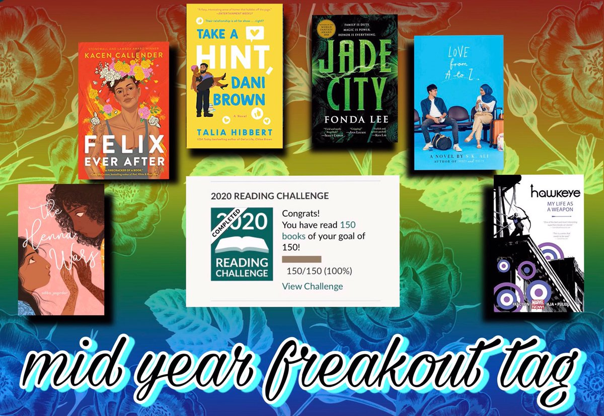

BOOK TAG
Mid Year Book Freakout Tag
JUNE 27, 2020

Today I completed my GoodReads reading challenge and finished 150 books in 175 days! I wanted to make a blog post in celebration, but 150 is a lot of books to cover. So, instead of covering all of them, I decided to just do the Mid Year Freakout Tag.
some math about the 150
best book you've read so far

I read Hawkeye vol 1 and 2 in May after having it on my TBR for years.
I had always heard amazing things about Aja and Fraction's work, and it definitely lived up to the hype! Their monochromatic color scheme, dynamic direction, and amazing composition blew me away.
The story itself wasn't anything extraordinary: a superhero fighting bad guys while dealing with internal conflict is nothing new. But the way this story was told felt revolutionary.
I've heard many comic artist highlight this series as points of personal inspiration, and I completely understand where they are coming from.
Synopsis: The breakout star of this summer's blockbuster Avengers film, Clint Barton - aka the self-made hero Hawkeye - fights for justice! With ex-Young Avenger Kate Bishop by his side, he's out to prove himself as one of Earth's Mightiest Heroes! SHIELD recruits Clint to intercept a packet of incriminating evidence - before he becomes the most wanted man in the world. You won't believe what is on The Tape! What is the Vagabond Code? Matt Fraction pens a Hawkeye thriller that spans the globe...and the darkest parts of Hawkeye's mind. Barton and Bishop mean double the Hawkeye and double the trouble...and stealing from the rich never looked so good.
best sequel you've read so far

I started the Daevabad trilogy by S A Chakraborty in January and absolutely fell in love with the world, the characters, and the writing. However, because the books are such tombs (all well over 500 pages) I didn't think it would be a while until I continued the series. Ultimately, I only lasted a few weeks before succumbing to my desires and reading The Kingdom of Copper.
This sequel took everything I loved from the first book and made me fall for them harder. The character development was completely stunning. The twists and turns had me on the edge of my seat for every single page. It is clear why this series is so beloved, and I cannot wait for the finale to be released in less than one week!
Because this is a sequel, the synopsis for Kingdom of Copper includes spoilers for the first book in the series. Therefore, I'm including the synopsis for the first book, The City of Brass, instead.
Synopsis: Nahri has never believed in magic. Certainly, she has power; on the streets of 18th century Cairo, she’s a con woman of unsurpassed talent. But she knows better than anyone that the trade she uses to get by—palm readings, zars, healings—are all tricks, sleights of hand, learned skills; a means to the delightful end of swindling Ottoman nobles.
But when Nahri accidentally summons an equally sly, darkly mysterious djinn warrior to her side during one of her cons, she’s forced to accept that the magical world she thought only existed in childhood stories is real. For the warrior tells her a new tale: across hot, windswept sands teeming with creatures of fire, and rivers where the mythical marid sleep; past ruins of once-magnificent human metropolises, and mountains where the circling hawks are not what they seem, lies Daevabad, the legendary city of brass, a city to which Nahri is irrevocably bound.
In that city, behind gilded brass walls laced with enchantments, behind the six gates of the six djinn tribes, old resentments are simmering. And when Nahri decides to enter this world, she learns that true power is fierce and brutal. That magic cannot shield her from the dangerous web of court politics. That even the cleverest of schemes can have deadly consequences. After all, there is a reason they say be careful what you wish for...
new release(s) you haven't read yet, but want to
There's no way I could only pick one book for this category, but I've wrestled it down to five from the dozens on my list.
I'd love to say the reason why I haven't read these yet is due to libraries and bookstores being shut down, but obviously that hasn't stopped me from reading other books. Although these aren't at the top of my current TBR, I do think I'll get to these within the next few months.
Clap When You Land by Elizabeth Acevedo

loved her other books
Synopsis: In a novel-in-verse that brims with grief and love, National Book Award-winning and New York Times bestselling author Elizabeth Acevedo writes about the devastation of loss, the difficulty of forgiveness, and the bittersweet bonds that shape our lives. Camino Rios lives for the summers when her father visits her in the Dominican Republic. But this time, on the day when his plane is supposed to land, Camino arrives at the airport to see crowds of crying people… In New York City, Yahaira Rios is called to the principal’s office, where her mother is waiting to tell her that her father, her hero, has died in a plane crash. Separated by distance—and Papi’s secrets—the two girls are forced to face a new reality in which their father is dead and their lives are forever altered. And then, when it seems like they’ve lost everything of their father, they learn of each other.
Sports is Hell by Ben Passmore

huge fan of his work
Synopsis: Some wars are for religion and some are for political belief, but this one is for football. After her city wins the Super Bowl for the first time, Tea is separated from her friend during a riot and joins a small clique fighting its way through armed groups of football fanatics to met a star receiver that just might end the civil war or become the city's new oppressive leader.
A Song Below Water by Bethany C Morrow

remember hearing about this at the beginning of the year, kept my eye out for Black sirens
Synopsis: Tavia is already at odds with the world, forced to keep her siren identity under wraps in a society that wants to keep her kind under lock and key. Never mind she's also stuck in Portland, Oregon, a city with only a handful of black folk and even fewer of those with magical powers. At least she has her bestie Effie by her side as they tackle high school drama, family secrets, and unrequited crushes.
But everything changes in the aftermath of a siren murder trial that rocks the nation; the girls’ favorite Internet fashion icon reveals she's also a siren, and the news rips through their community. Tensions escalate when Effie starts being haunted by demons from her past, and Tavia accidentally lets out her magical voice during a police stop. No secret seems safe anymore—soon Portland won’t be either.
The Henna Wars by Adiba Jaigirdar

heard about this from saajid and have been super excited for it
Synopsis: When Nishat comes out to her parents, they say she can be anyone she wants—as long as she isn’t herself. Because Muslim girls aren’t lesbians. Nishat doesn’t want to hide who she is, but she also doesn’t want to lose her relationship with her family. And her life only gets harder once a childhood friend walks back into her life.
Flávia is beautiful and charismatic and Nishat falls for her instantly. But when a school competition invites students to create their own businesses, both Flávia and Nishat choose to do henna, even though Flávia is appropriating Nishat’s culture. Amidst sabotage and school stress, their lives get more tangled—but Nishat can’t quite get rid of her crush on Flávia, and realizes there might be more to her than she realized.
Out Now edited by Saundra Mitchell

loved the first one, know im gonna love this one too, introduced me to some of my favorite authors
Synopsis: QUEER WE GO AGAIN! A follow-up to the critically acclaimed All Out anthology, Out Now features seventeen new short stories from amazing queer YA authors. Vampires crash prom, aliens run from the government, a president’s daughter comes into her own, a true romantic tries to soften the heart of a cynical social media influencer, a selkie and the sea call out to a lost soul. Teapots and barbershops, skateboards and VW vans, Street Fighter and Ares’s sword: Out Now has a story for every reader and surprises with each turn of the page!
most anticipated release(s) for the second half of the year
Again, there is no way I could choose only one new release, and again, I've managed to narrow it down to five!
The Death of Vivek Oji by Akwaeke Emezi

read pet last year, freshwater in february, and was blown away by those two works, and i know ill be blown away by this one as well
Synopsis: One afternoon, in a town in southeastern Nigeria, a mother opens her front door to discover her son’s body, wrapped in colorful fabric, at her feet. What follows is the tumultuous, heart-wrenching story of one family’s struggle to understand a child whose spirit is both gentle and mysterious. Raised by a distant father and an understanding but overprotective mother, Vivek suffers disorienting blackouts, moments of disconnection between self and surroundings. As adolescence gives way to adulthood, Vivek finds solace in friendships with the warm, boisterous daughters of the Nigerwives, foreign-born women married to Nigerian men. But Vivek’s closest bond is with Osita, the worldly, high-spirited cousin whose teasing confidence masks a guarded private life. As their relationship deepens—and Osita struggles to understand Vivek’s escalating crisis—the mystery gives way to a heart-stopping act of violence in a moment of exhilarating freedom.
Propulsively readable, teeming with unforgettable characters, The Death of Vivek Oji is a novel of family and friendship that challenges expectations—a dramatic story of loss and transcendence that will move every reader.
Darius the Great Deserves Better by Adib Khorram

first book is one of my fav books of all time, cant wait to see more of darius where he is now ready to tackle romance
Synopsis: Darius Kellner is having a bit of a year. Since his trip to Iran this past spring, a lot has changed. He’s getting along with his dad, and his best friend Sohrab is only a Skype call away. Between his first boyfriend, Landon, his varsity soccer practices, and his internship at his favorite tea shop, Darius is feeling pretty okay. Like he finally knows what it means to be Darius Kellner.
Then, of course, everything changes. Darius’s grandmothers are in town for a long visit while his dad is gone on business, and Darius isn’t sure whether they even like him. The internship isn’t what Darius thought it would be, and now he doesn’t know about turning tea into his career. He was sure he liked Landon, but when he starts hanging out with Chip–soccer teammate and best friend of Trent Bolger, epic bully–well, he’s just not so sure about Landon anymore, either.
Darius thought he knew exactly who he was and what he wanted, but maybe he was wrong. Maybe he deserves better.
How it All Blew Up by Arvin Ahmadi

I havent read anything by this author before but im extremely interested in this story
Synopsis: Eighteen-year-old Amir Azadi always knew coming out to his Muslim family would be messy--he just didn't think it would end in an airport interrogation room. But when faced with a failed relationship, bullies, and blackmail, running away to Rome is his only option. Right?
Soon, late nights with new friends and dates in the Sistine Chapel start to feel like second nature... until his old life comes knocking on his door. Now, Amir has to tell the whole truth and nothing but the truth to a US Customs officer, or risk losing his hard-won freedom.
The Ever Cruel Kingdom by Rin Chupeco

the first was one of my favorite reads of last year, and im really excited to read the conclusion to that story
Because this is a sequel, the synopsis for The Ever Cruel Kingom includes spoilers for the first book in the series. Therefore, I'm including the synopsis for the first book, The Never Tilting World, instead.
Synopsis: Generations of twin goddesses have long ruled Aeon. But seventeen years ago, one sister’s betrayal defied an ancient prophecy and split their world in two. The planet ceased to spin, and a Great Abyss now divides two realms: one cloaked in perpetual night, the other scorched by an unrelenting sun.
While one sister rules Aranth—a frozen city surrounded by a storm-wracked sea —her twin inhabits the sand-locked Golden City. Each goddess has raised a daughter, and each keeps her own secrets about her sister’s betrayal.
But when shadowy forces begin to call their daughters, Odessa and Haidee, back to the site of the Breaking, the two young goddesses —along with a powerful healer from Aranth, and a mouthy desert scavenger —set out on separate journeys across treacherous wastelands, desperate to heal their broken world. No matter the sacrifice it demands.
The Thirty Names of Night by Zeyn Joukhadar

trans ownvoices is my home
Synopsis: Five years after a suspicious fire killed his ornithologist mother, a closeted Syrian American trans boy sheds his birth name and searches for a new one. He has been unable to paint since his mother’s ghost has begun to visit him each evening. As his grandmother’s sole caretaker, he spends his days cooped up in their apartment, avoiding his neighborhood masjid, his estranged sister, and even his best friend (who also happens to be his longtime crush). The only time he feels truly free is when he slips out at night to paint murals on buildings in the once-thriving Manhattan neighborhood known as Little Syria.
One night, he enters the abandoned community house and finds the tattered journal of a Syrian American artist named Laila Z, who dedicated her career to painting the birds of North America. She famously and mysteriously disappeared more than sixty years before, but her journal contains proof that both his mother and Laila Z encountered the same rare bird before their deaths. In fact, Laila Z’s past is intimately tied to his mother’s—and his grandmother’s—in ways he never could have expected. Even more surprising, Laila Z’s story reveals the histories of queer and transgender people within his own community that he never knew. Realizing that he isn’t and has never been alone, he has the courage to officially claim a new name: Nadir, an Arabic name meaning rare.
As unprecedented numbers of birds are mysteriously drawn to the New York City skies, Nadir enlists the help of his family and friends to unravel what happened to Laila Z and the rare bird his mother died trying to save. Following his mother’s ghost, he uncovers the silences kept in the name of survival by his own community, his own family, and within himself, and discovers the family that was there all along.
biggest disappointment

meet cute
Synopsis: Whether or not you believe in fate, or luck, or love at first sight, every romance has to start somewhere. MEET CUTE is an anthology of original short stories featuring tales of "how they first met" from some of today’s most popular YA authors.
biggest surprise
sasha from the gym

Synopsis: His name is Sasha, I met him at the gym. He's the only one besides me who visits it late at night, so we got talking. Sasha from the Gym is a 64-page queer adult comic for ages 18+.
favorite new author

aiden thomas
newest fictional crush
the two daras

newest favorite character

zeynab of love from a to z
book that made you cry

my dark vanessa
Synopsis: Exploring the psychological dynamics of the relationship between a precocious yet naïve teenage girl and her magnetic and manipulative teacher, a brilliant, all-consuming read that marks the explosive debut of an extraordinary new writer.
2000. Bright, ambitious, and yearning for adulthood, fifteen-year-old Vanessa Wye becomes entangled in an affair with Jacob Strane, her magnetic and guileful forty-two-year-old English teacher.
2017. Amid the rising wave of allegations against powerful men, a reckoning is coming due. Strane has been accused of sexual abuse by a former student, who reaches out to Vanessa, and now Vanessa suddenly finds herself facing an impossible choice: remain silent, firm in the belief that her teenage self willingly engaged in this relationship, or redefine herself and the events of her past. But how can Vanessa reject her first love, the man who fundamentally transformed her and has been a persistent presence in her life? Is it possible that the man she loved as a teenager—and who professed to worship only her—may be far different from what she has always believed?
Alternating between Vanessa’s present and her past, My Dark Vanessa juxtaposes memory and trauma with the breathless excitement of a teenage girl discovering the power her own body can wield. Thought-provoking and impossible to put down, this is a masterful portrayal of troubled adolescence and its repercussions that raises vital questions about agency, consent, complicity, and victimhood. Written with the haunting intimacy of The Girls and the creeping intensity of Room, My Dark Vanessa is an era-defining novel that brilliantly captures and reflects the shifting cultural mores transforming our relationships and society itself.
book that made you laugh

snapdragon
Snap's town had a witch. At least, that's how the rumor goes. But in reality, Jacks is just a crocks-wearing, internet-savvy old lady who sells roadkill skeletons online--after doing a little ritual to put their spirits to rest. It's creepy, sure, but Snap thinks it's kind of cool, too. They make a deal: Jacks will teach Snap how to take care of the baby opossums that Snap rescued, and Snap will help Jacks with her work. But as Snap starts to get to know Jacks, she realizes that Jacks may in fact have real magic--and a connection with Snap's family's past.
most beautiful book you've bought this year

felix ever after
Synopsis: From Stonewall and Lambda Award–winning author Kacen Callender comes a revelatory YA novel about a transgender teen grappling with identity and self-discovery while falling in love for the first time.
Felix Love has never been in love—and, yes, he’s painfully aware of the irony. He desperately wants to know what it’s like and why it seems so easy for everyone but him to find someone. What’s worse is that, even though he is proud of his identity, Felix also secretly fears that he’s one marginalization too many—Black, queer, and transgender—to ever get his own happily-ever-after.
When an anonymous student begins sending him transphobic messages—after publicly posting Felix’s deadname alongside images of him before he transitioned—Felix comes up with a plan for revenge. What he didn’t count on: his catfish scenario landing him in a quasi–love triangle....
But as he navigates his complicated feelings, Felix begins a journey of questioning and self-discovery that helps redefine his most important relationship: how he feels about himself.
Felix Ever After is an honest and layered story about identity, falling in love, and recognizing the love you deserve.
books you need to read by the end of the year
limited to five again
the poppy war

Synopsis: When Rin aced the Keju—the Empire-wide test to find the most talented youth to learn at the Academies—it was a shock to everyone: to the test officials, who couldn’t believe a war orphan from Rooster Province could pass without cheating; to Rin’s guardians, who believed they’d finally be able to marry her off and further their criminal enterprise; and to Rin herself, who realized she was finally free of the servitude and despair that had made up her daily existence. That she got into Sinegard—the most elite military school in Nikan—was even more surprising. But surprises aren’t always good.
Because being a dark-skinned peasant girl from the south is not an easy thing at Sinegard. Targeted from the outset by rival classmates for her color, poverty, and gender, Rin discovers she possesses a lethal, unearthly power—an aptitude for the nearly-mythical art of shamanism. Exploring the depths of her gift with the help of a seemingly insane teacher and psychoactive substances, Rin learns that gods long thought dead are very much alive—and that mastering control over those powers could mean more than just surviving school.
For while the Nikara Empire is at peace, the Federation of Mugen still lurks across a narrow sea. The militarily advanced Federation occupied Nikan for decades after the First Poppy War, and only barely lost the continent in the Second. And while most of the people are complacent to go about their lives, a few are aware that a Third Poppy War is just a spark away . . .
Rin’s shamanic powers may be the only way to save her people. But as she finds out more about the god that has chosen her, the vengeful Phoenix, she fears that winning the war may cost her humanity . . . and that it may already be too late.
jade city

Synopsis: The Kaul family is one of two crime syndicates that control the island of Kekon. It's the only place in the world that produces rare magical jade, which grants those with the right training and heritage superhuman abilities. The Green Bone clans of honorable jade-wearing warriors once protected the island from foreign invasion--but nowadays, in a bustling post-war metropolis full of fast cars and foreign money, Green Bone families like the Kauls are primarily involved in commerce, construction, and the everyday upkeep of the districts under their protection. When the simmering tension between the Kauls and their greatest rivals erupts into open violence in the streets, the outcome of this clan war will determine the fate of all Green Bones and the future of Kekon itself.
an ember in the ashes

Synopsis: Laia is a slave. Elias is a soldier. Neither is free. Under the Martial Empire, defiance is met with death. Those who do not vow their blood and bodies to the Emperor risk the execution of their loved ones and the destruction of all they hold dear.
It is in this brutal world, inspired by ancient Rome, that Laia lives with her grandparents and older brother. The family ekes out an existence in the Empire’s impoverished backstreets. They do not challenge the Empire. They’ve seen what happens to those who do.
But when Laia’s brother is arrested for treason, Laia is forced to make a decision. In exchange for help from rebels who promise to rescue her brother, she will risk her life to spy for them from within the Empire’s greatest military academy.
There, Laia meets Elias, the school’s finest soldier—and secretly, its most unwilling. Elias wants only to be free of the tyranny he’s being trained to enforce. He and Laia will soon realize that their destinies are intertwined—and that their choices will change the fate of the Empire itself.
the fifth season

Synopsis: This is the way the world ends. Again. Three terrible things happen in a single day. Essun, a woman living an ordinary life in a small town, comes home to find that her husband has brutally murdered their son and kidnapped their daughter. Meanwhile, mighty Sanze -- the world-spanning empire whose innovations have been civilization's bedrock for a thousand years -- collapses as most of its citizens are murdered to serve a madman's vengeance. And worst of all, across the heart of the vast continent known as the Stillness, a great red rift has been been torn into the heart of the earth, spewing ash enough to darken the sky for years. Or centuries. Now Essun must pursue the wreckage of her family through a deadly, dying land. Without sunlight, clean water, or arable land, and with limited stockpiles of supplies, there will be war all across the Stillness: a battle royale of nations not for power or territory, but simply for the basic resources necessary to get through the long dark night. Essun does not care if the world falls apart around her. She'll break it herself, if she must, to save her daughter.
an unkindness of ghosts

Synopsis: Odd-mannered, obsessive, withdrawn, Aster has little to offer folks in the way of rebuttal when they call her ogre and freak. She's used to the names; she only wishes there was more truth to them. If she were truly a monster, as they accuse, she'd be powerful enough to tear down the walls around her until nothing remained of her world, save for stories told around the cookfire.
Aster lives in the low-deck slums of the HSS Matilda, a space vessel organized much like the antebellum South. For generations, the Matilda has ferried the last of humanity to a mythical Promised Land. On its way, the ship's leaders have imposed harsh moral restrictions and deep indignities on dark-skinned sharecroppers like Aster, who they consider to be less than human.
When the autopsy of Matilda's sovereign reveals a surprising link between his death and her mother's suicide some quarter-century before, Aster retraces her mother's footsteps. Embroiled in a grudge with a brutal overseer and sowing the seeds of civil war, Aster learns there may be a way off the ship if she's willing to fight for it.